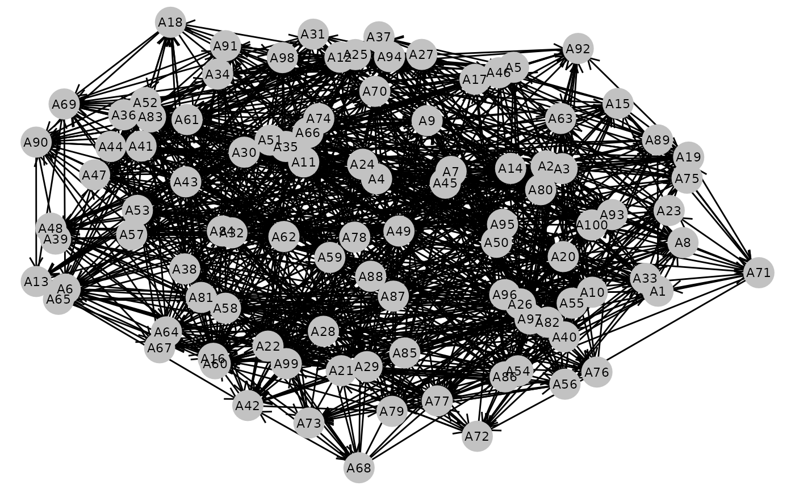

Read about Rogers’ Diffusion of Innovations model in the original publication of 1962 or on Wikipedia.
The version implemented here sets up 100 agents, all of which connect to 10 random others, and 10 are initially informed. Any informed agents inform all other agents that follow them.
library(tidyabm)
library(dplyr)
#>
#> Attaching package: 'dplyr'
#> The following objects are masked from 'package:stats':
#>
#> filter, lag
#> The following objects are masked from 'package:base':
#>
#> intersect, setdiff, setequal, union
library(ggplot2)Model configuration parameters are combined here:
n_uninformed_agents <- 90
n_initially_informed_agents <- 10Let’s create the agents (or, their blueprints):
agent_a <- create_agent() %>%
set_characteristic(informed = FALSE,
connected = FALSE) %>%
add_rule('initial connect',
connected == FALSE,
.consequence = function(me, abm) {
for (i in 1:10) {
random_agent <- get_random_agent(abm, me)
me <- network_connect(me, random_agent)
}
me %>%
set_characteristic(connected = TRUE,
.overwrite = TRUE,
.suppress_warnings = TRUE) %>%
return()
}) %>%
add_rule('diffuse information/innovation',
informed == TRUE,
.consequence = function(me, abm) {
me %>%
network_spread('informed',
TRUE,
overwrite = TRUE,
suppress_warnings = TRUE) %>%
return()
})
agent_b <- agent_a %>%
set_characteristic(informed = TRUE,
.overwrite = TRUE)
#> Warning: The following characteristics already existed. They were overwritten:
#> informedHere’s the actual model (i.e., the environment):
e <- create_network_environment(seed = 926742,
is_directed = TRUE) %>%
add_agents(agent_a,
n = n_uninformed_agents) %>%
add_agents(agent_b,
n = n_initially_informed_agents) %>%
add_variable(share_informed = function(me, abm) {
abm %>%
convert_agents_to_tibble() %>%
summarise(share_informed = sum(informed)/n()) %>%
pull(share_informed) %>%
return()
}) %>%
add_rule('stop when all are informed',
share_informed == 1,
.consequence = stop_abm) %>%
init()Finally, iteration. This is the step that takes a while. Also, as we are not sure whether it terminates, we go with a maximum of 20 iterations for now:
e <- e %>%
iterate(max_iterations = 20)
#> [1] "Tick 1 finished in 10.926 secs:"
#> [1] " share_informed: 0.1"
#> [1] "Tick 2 finished in 7.481 secs:"
#> [1] " share_informed: 0.74"
#> [1] "Tick 3 finished in 9.81 secs:"
#> [1] " share_informed: 1"It seemed to have stalled. Most likely, that’s because of the initial setup of the connections. Let’s take a look at it visually.

Yes, there is no connection between all of the agents. To manually inspect how everything went, we can just look at the environment or have it output all the agents.
e
#> # A tibble: 3 × 5
#> .tick share_informed .runtime .n_agents_after_tick .finished_after_tick
#> * <dbl> <dbl> <drtn> <int> <lgl>
#> 1 1 0.1 10.926184 secs 100 FALSE
#> 2 2 0.74 7.480976 secs 100 FALSE
#> 3 3 1 9.810282 secs 100 TRUE
#> # ABM network environment
#> * directed, 100 agents
#> * 0 environment characteristic(s),
#> * 1 environment variable(s),
#> * 1 environment rule(s),
#> * ended after 3 ticks
e %>%
convert_agents_to_tibble()
#> # A tibble: 100 × 5
#> .id informed connected .indegree .outdegree
#> <chr> <lgl> <lgl> <list> <list>
#> 1 A1 TRUE TRUE <chr [8]> <chr [10]>
#> 2 A2 TRUE TRUE <chr [13]> <chr [10]>
#> 3 A3 TRUE TRUE <chr [10]> <chr [10]>
#> 4 A4 TRUE TRUE <chr [9]> <chr [10]>
#> 5 A5 TRUE TRUE <chr [7]> <chr [9]>
#> 6 A6 TRUE TRUE <chr [5]> <chr [10]>
#> 7 A7 TRUE TRUE <chr [7]> <chr [10]>
#> 8 A8 TRUE TRUE <chr [10]> <chr [9]>
#> 9 A9 TRUE TRUE <chr [11]> <chr [10]>
#> 10 A10 TRUE TRUE <chr [15]> <chr [10]>
#> # ℹ 90 more rowsUltimately, we are interested in how fast innovation went:
e %>%
ggplot(aes(x = .tick,
y = 100*share_informed)) +
geom_line() +
scale_x_continuous('Time [ticks]') +
scale_y_continuous('Share of informed agents [%]') +
theme_minimal() +
ggtitle('Information/Innovation Diffusion over Time')
We can compile relevant data for any publication we’re preparing through the ODD protocol:
e %>%
odd()
#> # A tibble: 7 × 4
#> `ODD category` Element Content `tidyABM information`
#> <chr> <chr> <chr> <chr>
#> 1 Overview Purpose and patterns "Brief… NA
#> 2 Overview Entities, state variables, and … "List … ABM network environm…
#> 3 Overview Process overview and scheduling "Provi… environment rules: s…
#> 4 Design concepts Design concepts "This … see the iteration in…
#> 5 Details Initialization "Speci… See the list of agen…
#> 6 Details Input data "Repor… NA
#> 7 Details Submodels "Repea… NA